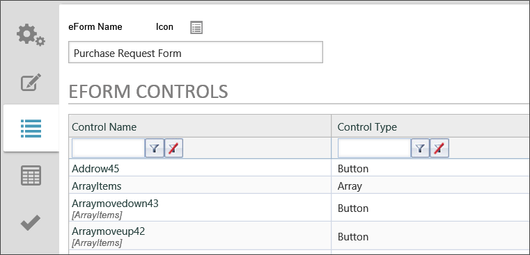
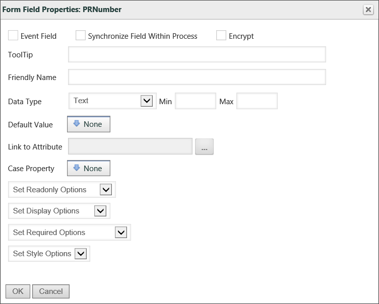
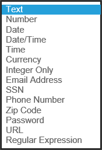
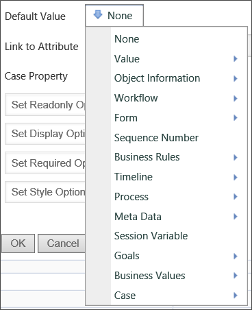
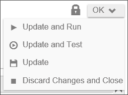

|
|
Lesson Contents | In this Lesson, you will learn how to configure Form definitions and form fields. |
As mentioned previously, once you check in the Form template to the Form definition, all of the controls that you place on the Form are used to create data fields in the Form definition. You can see all of these fields by clicking on the Form Controls tab of the Form definition.

Each control shown in the list of controls has its own set of properties in the Form definition, just as they do in the Form template. The properties in the Form definition are different, however. Where the control properties in the Form template mainly govern aspects of the control itself, the properties in the Form definition mainly govern the data contained in the control, such as its default values, whether it can be seen or edited, and more.
You can display the properties by clicking on the Edit link associated with the control, or by clicking the name of the control.

Every different type of control has specific properties that are only relevant to that type of control. For instance, Section controls have a Text property that other controls do not. Most controls, however, have a common set of properties that are listed below.
If checked off, this form field will trigger an event when the user interacts with it. Events can be used to update the form by triggering custom tasks or custom form scripts.
If checked, this field will synchronize values with all other form fields that have the same names but are on different Forms in the same Process. When the value of a synced form field is updated, the value will be synchronized with all other form fields with the same names in the Process, whether or not those form fields are also marked as synchronized. However, if a form field’s value is updated and that form field is not marked as a synchronized field, it will not update the values of other fields with the same names in the process, even if those fields are marked as synchronized. For this reason, it is best to ensure, if possible, that the field is editable only on one form, and is display-only on the other Forms in the process. If multiple Forms set the same field to be synchronized, it is possible that two users will overwrite each other's values.
If a column in an array is marked as synchronized, the number of rows and the content of that column will be synced with all other arrays in the process containing a column of the same name. This means that adding and removing rows in an array with a synced column will also add and remove rows in other arrays in the process with columns of the same name. Because synchronized array fields are so powerful, caution is recommended when using synchronized fields with arrays. Instead, we recommend alternatives, like the Copy Form Data custom task.
When moused over, the form field will display the text entered into this text box as a tooltip.
The friendly name is the name for the field that you wish to display in a more natural format for Knowledge View columns, validation error messages, or other uses. Because field names have some restrictions on spaces and special characters, they may not be formatted in normal English. A simple example might be a field for a user's first name, which might have the field name, "FirstName". For display purposes, you might wish the field to be displayed as "First Name". The Friendly Name property enables you to use normal English terms when the field's name is displayed in Process Director.
This allows you to fill a Dropdown field with the content from a dropdown object. You can link multiple dropdowns to dropdown objects, which allows you to reuse dropdown objects in multiple forms.

Setting the data type will force the form field to accept only data formatted as the appropriate type. The Data Type can be any of the following:
Text: this option allows for arbitrary text to be entered into the form field
Examples: “foo”, “bar”
Number: this option ensures that the form field contains a number (either with or without a decimal)
Examples: “10”, “9.75”
Date: this option ensures that the field contains a date. Dates must be in a format that can be interpreted by .NET.
Date/Time: this option ensures that the field contains a date and time. DateTimes must be in a format that can be interpreted by .NET.
Time: this option ensures that the field contains a time. Times must be in a format that can be interpreted by .NET.
Currency: this option ensures that the contents of the field can be interpreted as an amount of currency
Examples: “22”, “22.32”
Integer Only: this option ensures that the field contains an integer. It also allows you to specify a minimum and maximum value that the integer can be.
Examples: “1”, “394221”
Email Address: this option ensures that the field contains an email address. As a user warning, email addresses should not have any trailing spaces, or they will be rejected as invalid.
SSN: This option ensures that the field contains an American Social Security Number, with or without dashes.
Examples: “123456789”, “123-45-6789”
Phone Number: This option ensures that the field contains a phone number. Most formats people usually use to type phone numbers will be accepted.
Examples: “(123) 456-7890”, “+1 123-456-7890”, “123-4FO-OBAR x 4321”
ZIP Code: This option ensures that the field contains an American ZIP Code. The ZIP code can contain only five digits or all nine digits.
Examples: “12345”, “12345-6789”, “123456789”

You can specify the default value of a form field. The Default Value dropdown allows you to select from a list of common default values, like Process Instance Names or the results of Business Rules. You can also specify the default be set to a custom value or result from a System Variable Tag.
This option is relevant to using the Meta Data functionality in Process Director, which will be discussed in a later lesson. This option links the field to a Meta Data attribute.
This option gives you the ability to Enable or Disable a form control including the sections and collapsible sections. You may also Enable or Disable based on a condition using the Condition Builder dialog box.
This option gives you the ability to Show or Hide a form control including the sections and collapsible sections. You may also Show or Hide based on a condition using the Condition Builder.
This option gives you the ability to set the form control as required or not required including the sections and collapsible sections. You may also set the form control as required or not required based on a condition using the Condition Builder.
Form definition changes are saved using the actions dropdown menu that appears in the upper right corner of the Form definition.

The following options for saving your changes are available: